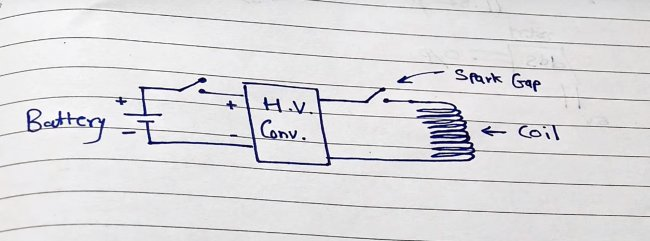
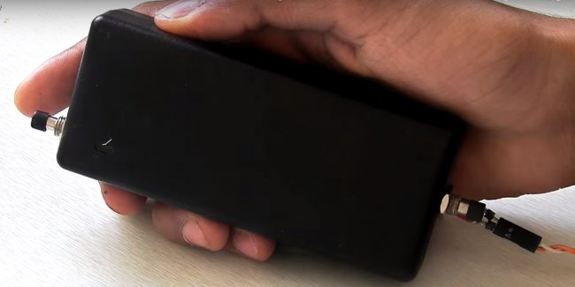

Глушилка

Недавно я решил собрать устройство которое глушит другие электронные устройства. Я считаю, что вам будет очень интересно узнать как же её сделать в домашних условиях.
Для начала нам надо купить следующие вещи:
- Аккумуляторы 3,7 В
- Корпус
- Преобразователь высокого напряжения
- Переключатели (две штуки)
- Супер клей
- Горячий клей
Сборка

Берем корпус и сверлим отверстия под переключатели. Один с низу, другой с верху. Теперь делаем катушку.
Наматываем по периметру корпуса. Витки фиксируем горячим клеем. Каждый виток отделен друг от друга.
Катушка состоит из 5 витков. Собираем все по схеме, припаиваем элементы.
Вставляем изоляционную прокладку между контактами высоковольтного выключателя, чтобы искра была внутри, а не снаружи.
Закрепляем все детали внутри корпуса, закрываем крышку корпуса.
ВАЖНАЯ ИНФОРМАЦИЯ
Я не знаю какой у глушилки срок годности, поэтому если устройство перестанет включатся, ударит вас током или взорвётся, то это ваши проблемы.
Также эта штука вряд-ли отключит какой-нибудь Boeing 737-800, однако выбить почти любой чип для это неё не проблема.
Ссылки: